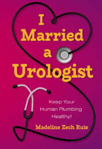

The Dream Class is the summation of Patricia Eltinge’s 25 years of study under Dr.
Pat Allen the world-renowned psychologist whose pioneer work on new avenues to dream
analysis is contained in this book. All of us dream and the process of capturing our
dreams and looking deeply into their meanings is of great benefit to anyone interested
in their own unconscious. The wonderful source of personal and universal information that
is available to us from these other dimensions can be useful in our daily lives as well as transformative. The Dream Class provides easy yet profound methods to help individuals delve into the revelations that are afforded to us through dreams.

Author Madeline Ruiz has been married to her reconstructive urologist husband, Dr. Henry Ruiz, for almost 20 years. Dr. Ruiz has one of the busiest medical practices in McAllen, TX. Known around town as “the Dick Doctor’s wife,” Madeline is approached almost daily for discreet urological advice by all sorts of townsfolk while on her errands.
She always refers the questioner to her husband’s office but those encounters have helped her to create a “Top 10 Type” list of the most prevalent urological problems for both men and women. And now Madeline has decided to share this important list and her insights in her new book
Author Shaul Ezer has brought to life the Old Testament chapters of Joshua’s famous conquest of Jericho. When Joshua takes on Moses’s role as leader of the Hebrews after Moses dies, he must prepare for battle to capture Canaan, the Promised Land.
At the same time he faces internal conflicts amongst the Hebrews as others question his leadership and his plans. Joshua must persevere in his trust that God will help him conquer the fortified city. This is a story of spies and intrigue, of human frailties and doubts in times of crises and danger, and of a stunning military victory.
OMore than a powerful and intimate look into Ms. Atlas’s lifelong journey through depression, starting with an attempted suicide at age 14 to her chance meeting with a therapist who eventually helped find her way.
This an uplifting and helpful guide with tools that helped anyone struggling with depression to gain clarity, confidence and equilibrium.
Mr. and Mrs. Fox and their little fox are a very shrewd, cunning family. They know how to get the best of everything and how to keep it for themselves. All three are very clever, and they are never taken in. But they are not happy.
The three of them set out together to find the Happy Forest, where they hope to live their lives together in complete happiness. But along the way, they will meet other folks, and they want to make sure they don’t get outsmarted by them, as they’re afraid they will miss out on all the best things in life. Will the Fox family truly find happiness in the Happy Forest?